Cómo capturar propuestas, guiar las tres rondas de votación de los gerentes y revelar a los ganadores.
Portalconcurso-arclad.vercel.app/admin
Votaciónconcurso-arclad.vercel.app
VersiónNoviembre 2026
Contenido
Índice
Introducción
Cómo funciona el concursoEl embudo y quién hace qué3
Portal de admin
Iniciar sesiónAcceso al portal4
Panel de inicioMétricas, embudo y accesos5
Capturar propuestaFormulario y logo6
Lista de propuestasBuscar, filtrar y exportar7
Detalle de una propuestaEditar, descartar y restaurar8
RondasAbrir, cerrar y compartir el link9
Resultados de una rondaRanking, corte y empates10
Pasar a la siguiente rondaSelección del Top N11
GanadoresTop 3 y paquete para la agencia12
Modo reunión
Modo reunión: galeríaProyectar propuestas13
Modo reunión: votación en vivoQR y avance14
Modo reunión: resultadosRanking para proyectar15
Modo reunión: revelar ganadores3er, 2º y 1er lugar16
Cierre
Lista rápida para el día de la votaciónAntes, durante y después17
Antes de empezar
Cómo funciona el concurso
Los colaboradores proponen un nombre y un logo. People & Culture captura las propuestas y los 11 gerentes votan en tres rondas hasta elegir a los 3 ganadores.
Todas
N
Propuestas activas capturadas por P&C
Ronda 1
15
Pasan las mejores 15
Ronda 2
5
Pasan las mejores 5
Ronda 3
3
Ganadores: 1º, 2º y 3º
Etapa
Quién vota
Qué hace el admin
Captura
Nadie
Captura cada propuesta que llega por correo, revisa duplicados y descarta las que no apliquen.
Ronda 1
Los 11 gerentes
Agrega todas las propuestas activas, abre la votación, comparte el link y la cierra cuando todos enviaron.
Ronda 2
Los 11 gerentes
Revisa resultados, resuelve empates en el corte y pasa el Top 15; abre, comparte y cierra.
Ronda 3
Los 11 gerentes
Pasa el Top 5; al cerrar, confirma a los 3 ganadores y descarga el paquete para la agencia.
Reunión
—
Proyecta la galería, el avance de la votación, los resultados y la revelación de ganadores.
Cómo votan. Cada gerente califica cada propuesta del 1 al 5 en cuatro criterios y presiona «Enviar mi voto». Solo cuentan los votos enviados.
Anónimo. Los gerentes no ven quién propuso cada nombre ni los resultados. Las calificaciones individuales solo se ven en este portal.
Dos accesos distintos. El portal de admin (/admin, con usuario y contraseña) es solo para People & Culture. Los gerentes no tienen usuario: votan desde el link concurso-arclad.vercel.app.
Portal de admin · /admin/login
Iniciar sesión
Entrada al portal de People & Culture. Solo pueden entrar los usuarios dados de alta como administradores.
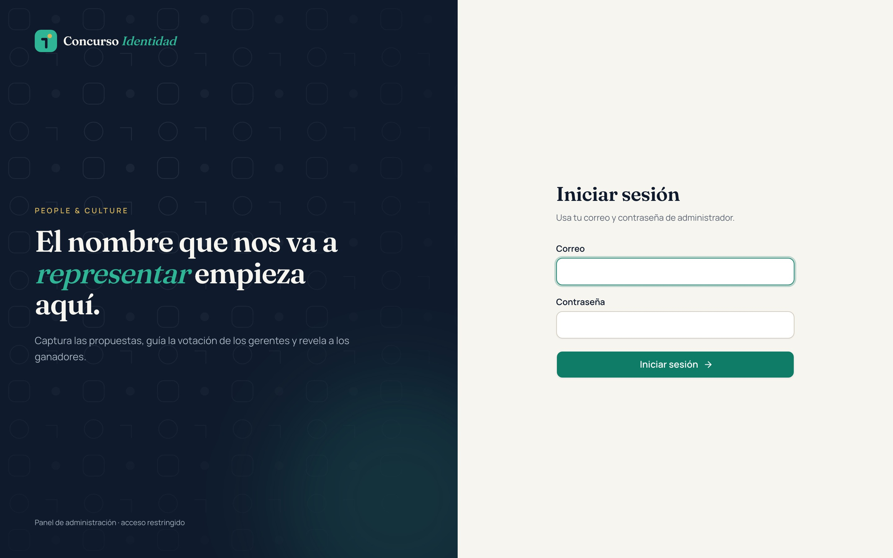
Escribe tu correo y tu contraseña y presiona Iniciar sesión.
Si aparece «No tienes acceso», tu usuario no está dado de alta como admin: pide que te agreguen.
Para salir, usa el ícono de Cerrar sesión en la esquina superior derecha.
Portal de admin · /admin
Panel de inicio
Vista general del concurso: cuántas propuestas hay, qué ronda está en curso y cuántos gerentes ya enviaron su voto.
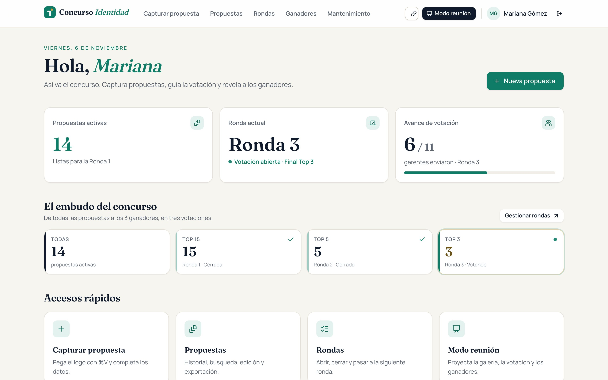
123
1Propuestas activas: las que participarán en la Ronda 1 (las descartadas no cuentan).
2Embudo del concurso: el estado de cada ronda (pendiente, votando o cerrada).
3Copiar link de votación: copia el link para pegarlo en correo, Teams o WhatsApp.
Los accesos rápidos llevan a captura, propuestas, rondas, modo reunión y ganadores.
Portal de admin · Capturar propuesta
Capturar propuesta
Registra cada propuesta que llega por correo. Todos los campos son obligatorios excepto las notas internas.
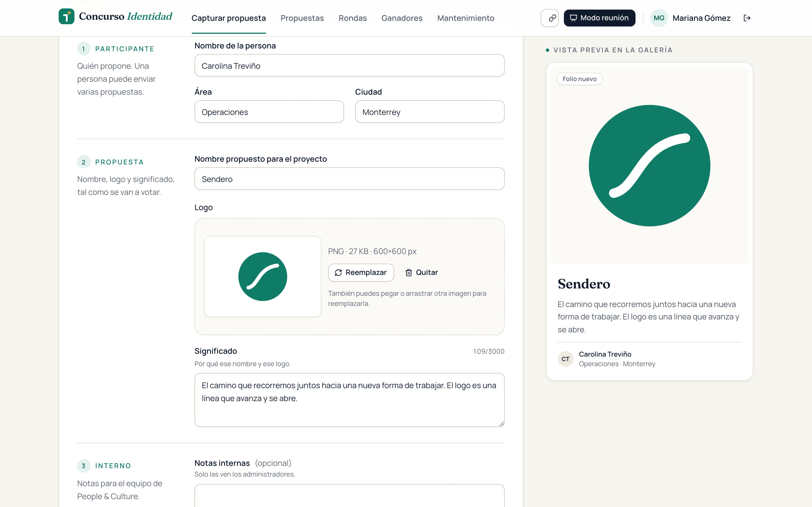
12
1Logo: pégalo con ⌘V (o Ctrl+V) desde el correo, arrástralo o haz clic para elegirlo. PNG o JPG de hasta 5 MB.
2Vista previa: así se verá la propuesta en la galería y en la votación.
Guardar y capturar otra (⇧⌘↵) limpia el formulario para seguir; Guardar (⌘↵) te lleva a la lista.
Área y ciudad se autocompletan; si escribes un nombre parecido a otro ya capturado, verás un aviso de posible duplicado.
Portal de admin · /admin/propuestas
Lista de propuestas
El historial completo, solo para admins: incluye las descartadas, las notas internas y quién capturó cada propuesta.
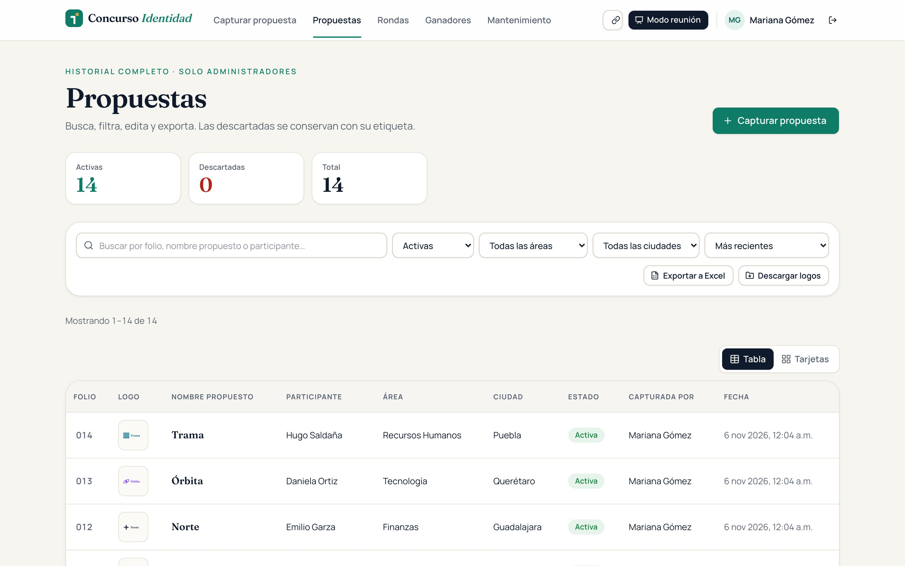
123
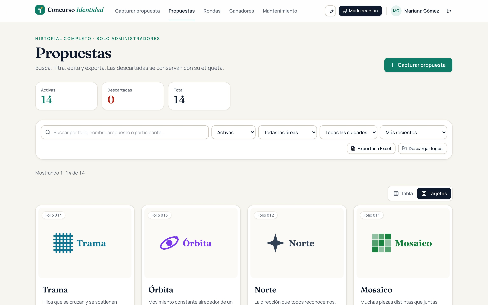
Vista en tarjetas, tipo galería.
1Busca por folio, nombre o participante y filtra por estado, área o ciudad.
2Exportar a Excel y Descargar logos respetan los filtros que tengas.
3Cambia entre Tabla y Tarjetas; la app recuerda tu elección.
Haz clic en una fila para abrir el detalle.
Portal de admin · Detalle
Detalle de una propuesta
Todos los datos de la propuesta, el logo en grande y su historial: quién la capturó, quién la editó y en qué rondas participa.
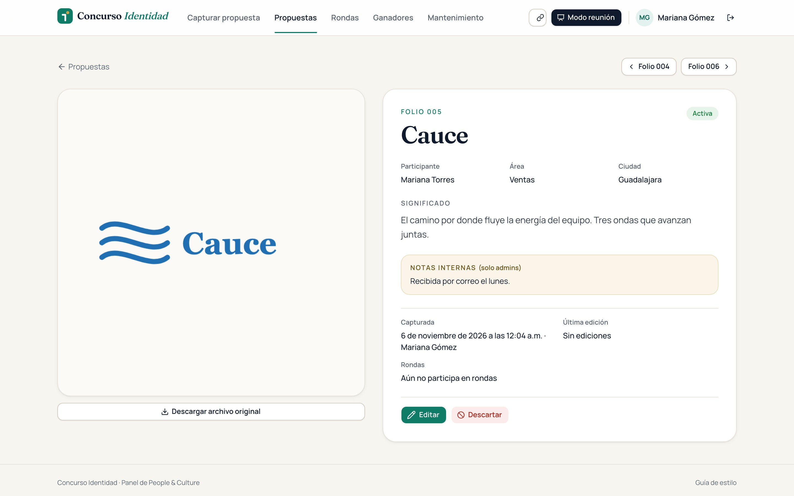
123
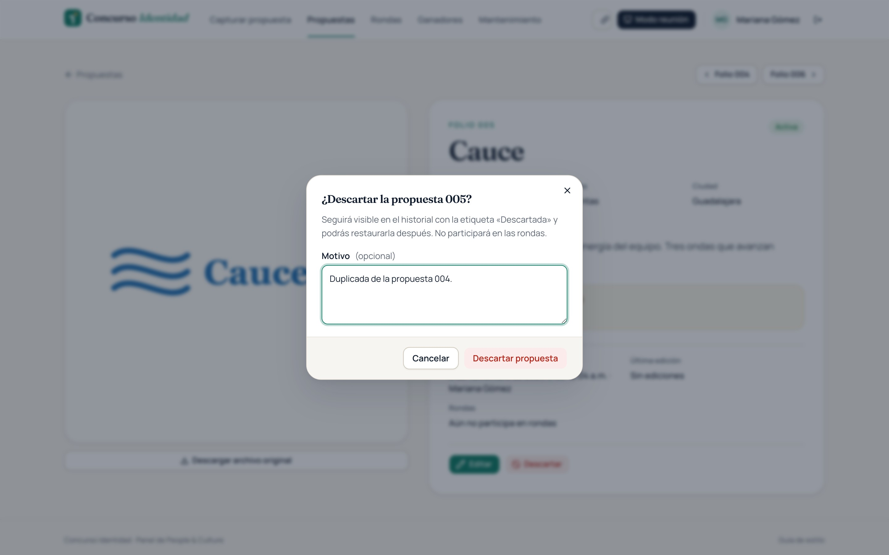
Descartar pide confirmación y un motivo opcional.
1Editar: corrige datos o reemplaza el logo. El folio nunca cambia.
2Descartar: la propuesta sale del concurso, pero se conserva con su etiqueta. «Restaurar» la regresa.
3Usa Anterior / Siguiente para revisar por folio.
No se puede descartar una propuesta que ya está en una ronda abierta o cerrada.
Portal de admin · /admin/rondas
Rondas
Aquí se abre y se cierra cada votación. Solo puede haber una ronda abierta a la vez.
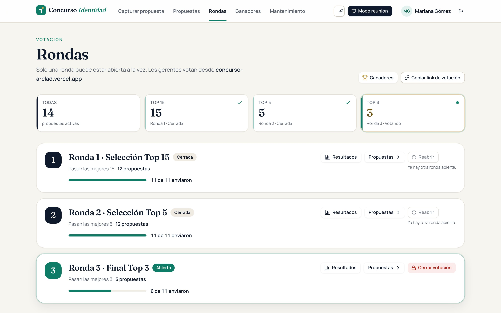
123
1El embudo muestra en qué etapa va el concurso.
2Abrir votación / Cerrar votación, siempre con confirmación. Una ronda sin propuestas no se puede abrir.
3Copiar link de votación para compartirlo con los gerentes.
En Propuestas de la Ronda 1 usa «Agregar todas las propuestas activas» antes de abrirla.
Reabrir una ronda cerrada permite que los gerentes cambien su voto: úsalo solo si es necesario.
Portal de admin · Resultados
Resultados de una ronda
Ranking con el promedio de cada propuesta. Durante la votación se actualiza solo; solo cuentan los votos enviados.
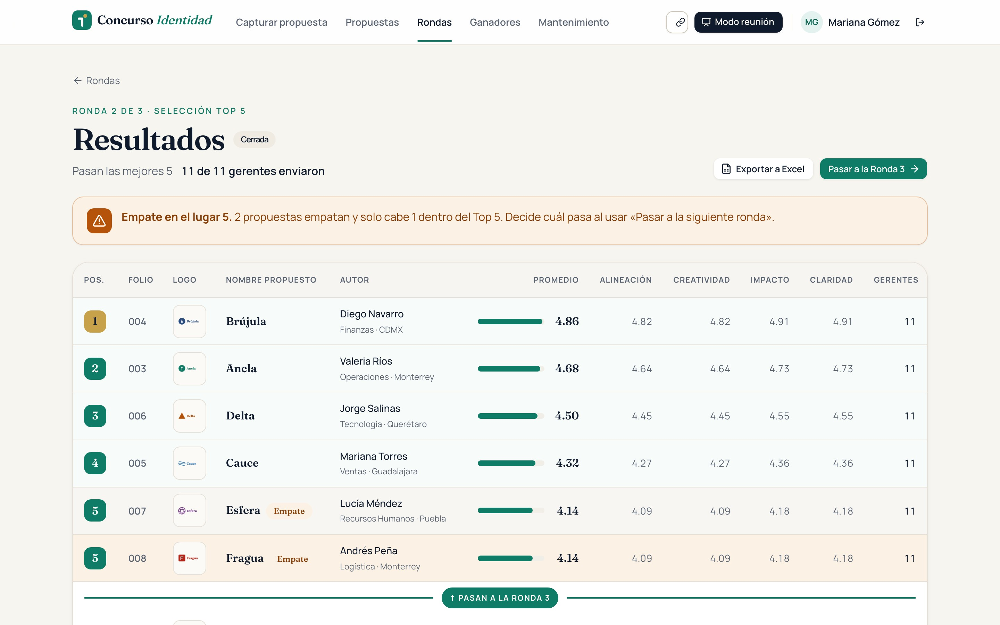
123
1Si hay empate en el lugar de corte, la app lo avisa para que decidas cuál pasa.
2La línea de corte separa las propuestas que pasan a la siguiente ronda.
3Con la ronda cerrada, Pasar a la Ronda N lleva a la selección final.
Haz clic en una propuesta para ver la calificación de cada gerente; Exportar a Excel descarga ranking y detalle.
Portal de admin · Pasar a la siguiente ronda
Pasar a la siguiente ronda
Viene preseleccionado el Top N según el ranking. Ajusta la selección si hay empate y confirma.
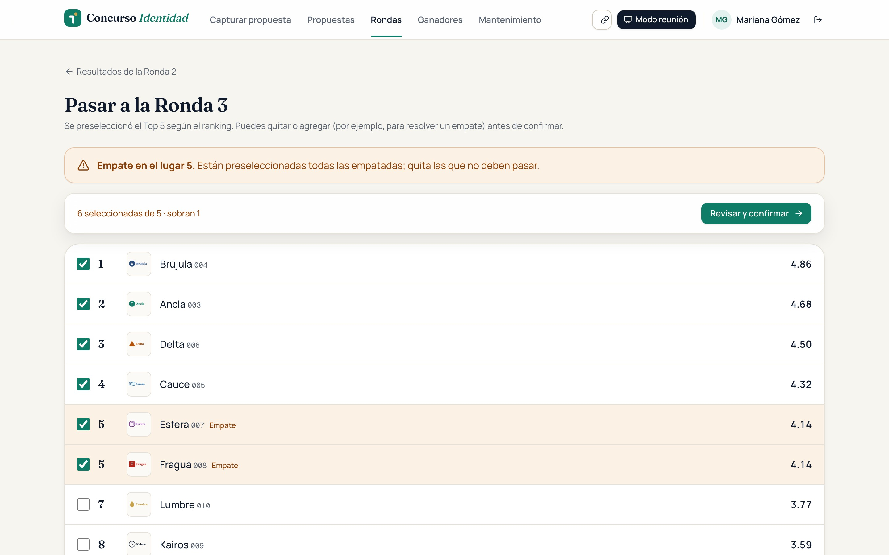
123
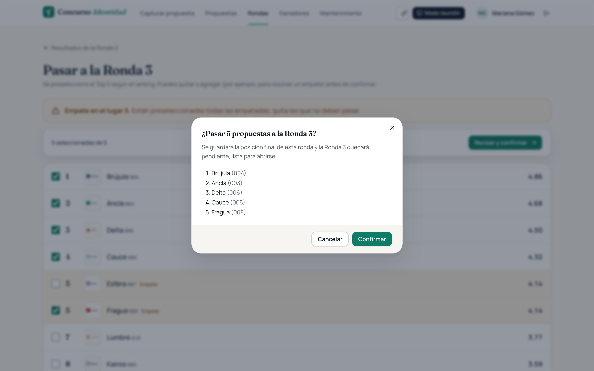
Resumen antes de confirmar.
1El aviso de empate marca las propuestas empatadas.
2El contador indica si sobran o faltan propuestas respecto al Top N.
3Revisar y confirmar muestra el resumen; al confirmar, la siguiente ronda queda lista para abrirse.
Mientras la siguiente ronda no se abra, puedes Deshacer avance desde los resultados.
Portal de admin · /admin/ganadores
Ganadores
Al cerrar la Ronda 3 aparecen los 3 ganadores con su logo, significado y autor.
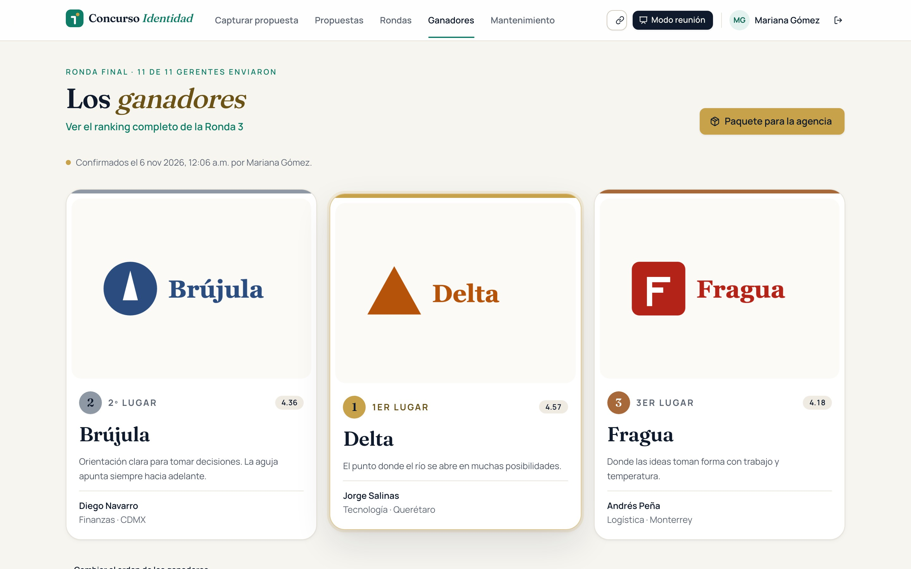
12
1El 1er lugar va al centro, con oro; 2º y 3º con plata y bronce.
2Paquete para la agencia: ZIP con los logos originales y un Excel con nombre, significado y autor.
Si hay empate entre lugares, primero elige el orden final y presiona Confirmar ganadores.
«Cambiar el orden de los ganadores» permite corregir la confirmación.
Modo reunión · /admin/reunion
Modo reunión: galería
Pantalla para proyectar en la reunión. Ábrela desde «Modo reunión» en el encabezado; presiona F para pantalla completa.
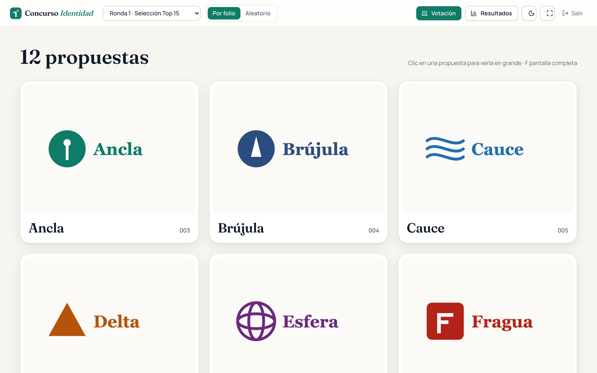
12
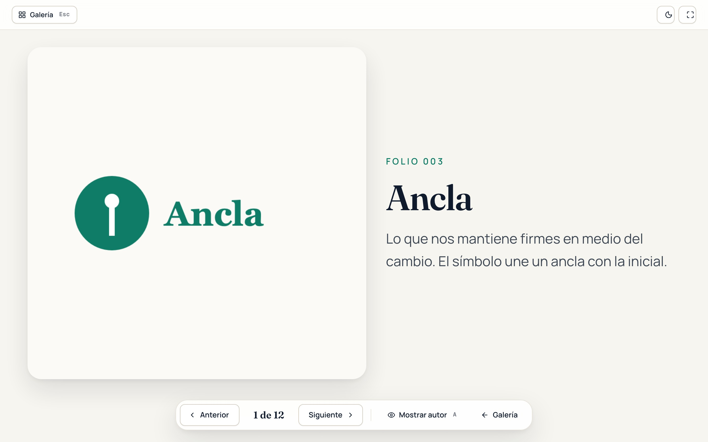
Una propuesta en grande; el autor está oculto.
1Elige qué mostrar: todas las propuestas activas o las de una ronda; orden por folio o aleatorio.
2Votación muestra el QR y el avance (solo si hay una ronda abierta).
En una propuesta: ← → para navegar, A para mostrar u ocultar el autor y Esc para volver.
Los controles se ocultan solos; el botón de luna o sol cambia entre tema oscuro y claro.
Modo reunión · Votación
Modo reunión: votación en vivo
Muestra el QR para que los gerentes voten desde su celular y el avance en tiempo real, sin calificaciones.
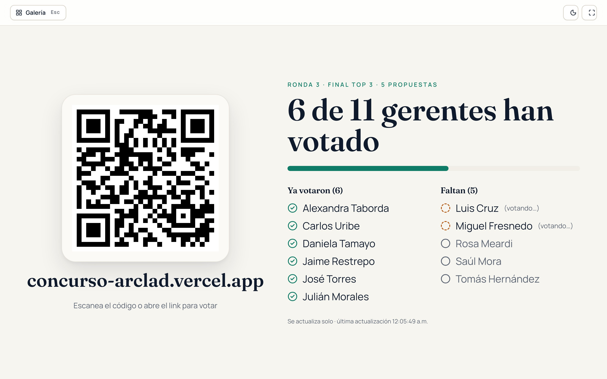
12
1El QR y el link corto llevan directo a la página de votación.
2«6 de 11 gerentes han votado» se actualiza solo cada pocos segundos.
«Ya votaron» lista a quien envió su voto; «Faltan» incluye a quien va a medias (votando…).
Nunca se muestran calificaciones individuales.
Modo reunión · Resultados
Modo reunión: resultados
Proyecta el ranking de una ronda cerrada, resaltando las propuestas que pasan. No muestra calificaciones por gerente ni autores.
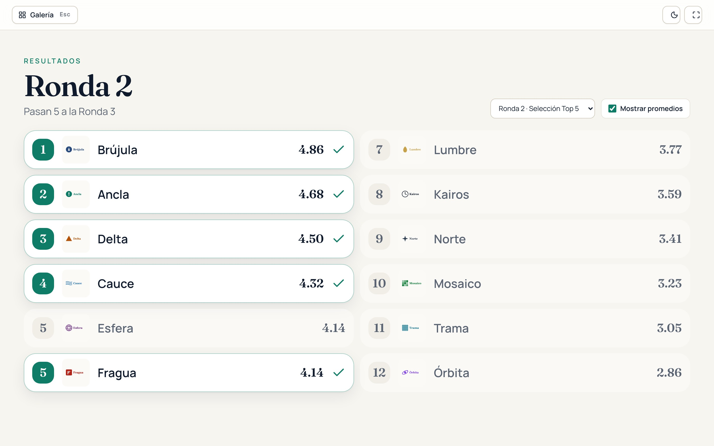
12
1Elige la ronda cerrada que quieres mostrar.
2Mostrar promedios enciende o apaga los números (por defecto están ocultos).
En la ronda final, los lugares 1, 2 y 3 aparecen en oro, plata y bronce.
Modo reunión · Revelar ganadores
Modo reunión: revelar ganadores
El momento final. Se habilita cuando los ganadores están confirmados. Avanza con → o un clic; ← regresa.
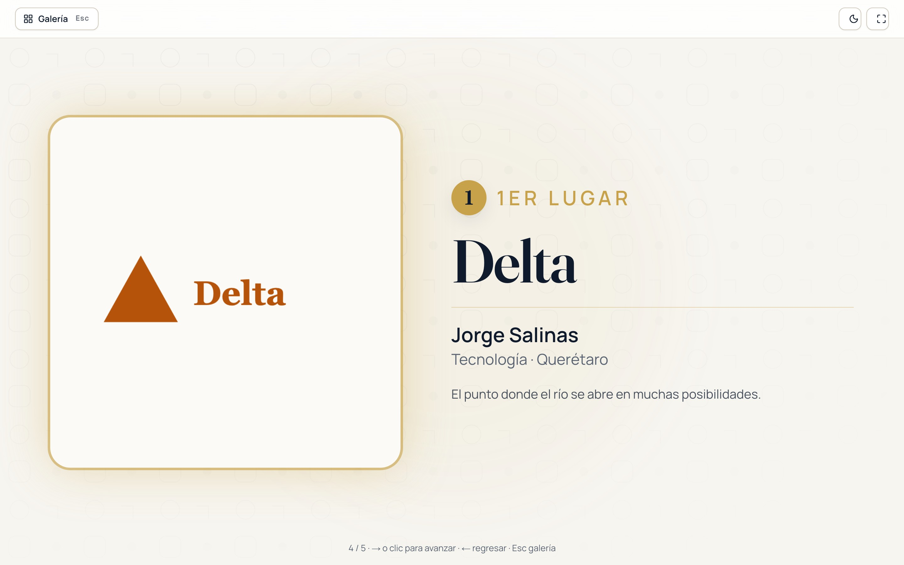
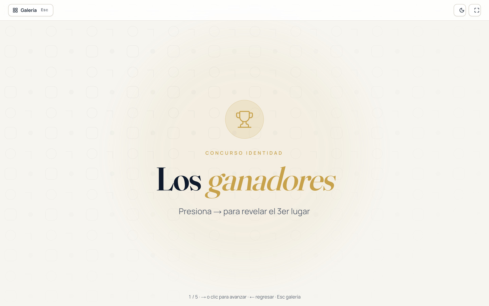
Portada.
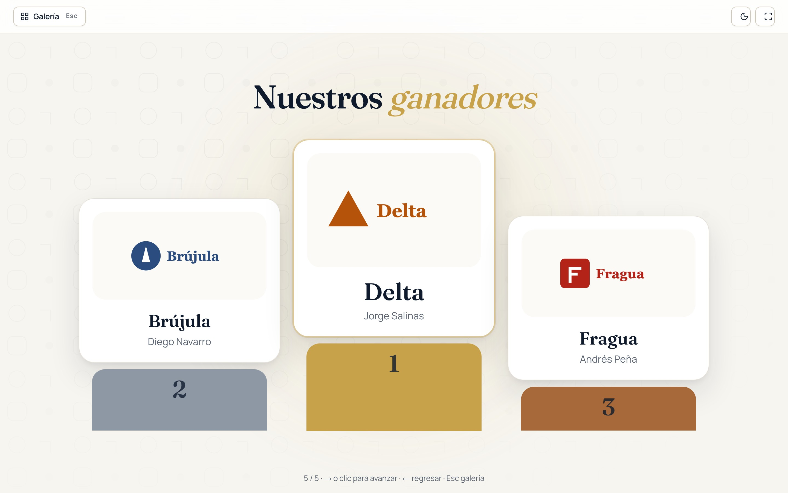
Podio final.
Orden de la revelación: portada → 3er lugar → 2º lugar → 1er lugar → podio.
El autor (participante, área y ciudad) aparece al revelar cada lugar.
Checklist
Lista rápida para el día de la votación
Úsala en cada ronda. Marca cada paso conforme avances.
Antes
Preparar
Todas las propuestas capturadas y revisadas (sin duplicados).
Las que no participan, descartadas.
Ronda 1: «Agregar todas las propuestas activas».
Probar el link de votación en tu celular.
Proyector listo: modo reunión, tema y pantalla completa (F).
Durante
Votar
Rondas → Abrir votación.
Compartir el QR (modo reunión → Votación) o «Copiar link de votación».
Seguir el avance «x de 11».
Recordar a quien aparece en «Faltan» o «votando…».
Cuando los 11 enviaron: Cerrar votación.
Después
Cerrar
Revisar resultados y resolver empates en el corte.
Exportar a Excel como respaldo.
Pasar a la siguiente ronda (Top 15 → Top 5).
Al final: Confirmar ganadores y descargar el paquete para la agencia.
En la reunión: Revelar ganadores.
Link de votación: concurso-arclad.vercel.app · Portal: concurso-arclad.vercel.app/admin